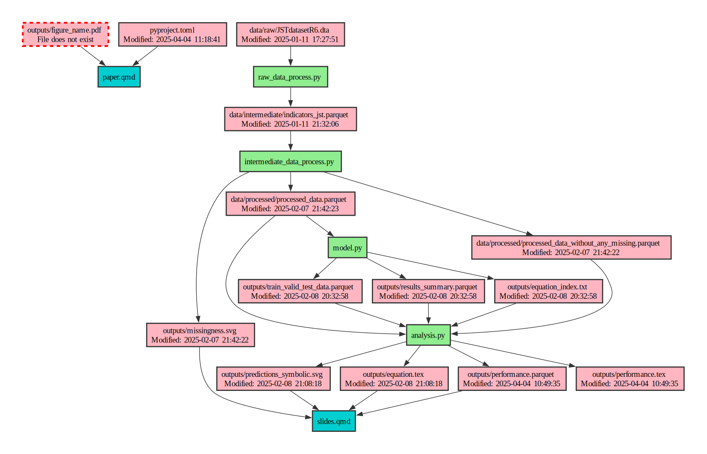

If you’ve ever inherited responsibility for a messy Python codebase, or returned to your own code after a few months, and wondered “what on earth is going on here?”, you’re not alone. Understanding complex code dependencies, data flows, and how different parts of a project interact is a common challenge, especially with analytical pipelines that have gathered a bit of dust or changed substantially since you last used them.
Of course, ideally, it shouldn’t get to this stage: there are ways to auto-document precisely what’s happening in your code, eg via a Makefile and Makefile2Dag—see a fully worked example here—or using a data orchestrator. For everything else, there’s smartrappy.
smartrappy1 is designed to help you understand and visualise the dependencies in analytical Python projects that haven’t hit the heady heights of having auto-generated their own directed cyclic graph. Let’s be honest, that’s most projects. It’s important to say that smartrappy is just sniffing out relationships between code and data and other things in a project, and it does a fairly good job of that, but it’s not perfect and it certainly won’t find everything. For a lot of analytical Python code, though, it should give you a big boost in understanding what’s going on.
1 smart + RAP (Reproducible Analytical Pipeline) + py. Get it? Get it?? Hilarious.
What does smartrappy do?
smartrappy analyses a Python project and infers the directed acyclic graph (DAG) of code and data dependencies. It traces through your codebase to find (as best as it can):
- Which files are being read from or written to, including data files, databases, configuration files, and quarto files
- When data files were last updated, or whether they exist on disk at all
- What Python modules are being imported, including ones internal and external (ie packages) to the project
- How these all connect together
It then visualises these relationships, and quite beautifully I think: let’s take a look.
Here’s the default output, which appears in the console, from running on a test repo I put together. If you haven’t come across uvx it’s an Astral uv command that does a one-off install just to use a tool (ie without installing that tool in a permanent Python environment). I’m imagining that smartrappy gets used in this way.
uvx smartrappy tests/test_set_twoFile Operations, Database Operations, and Import Analysis
================================================================================
File: data/input.csv
Operation: READ
Referenced in:
- tests/test_set_two/data_processing.py
File: data/processed.csv
Operation: READ/WRITE
Referenced in:
- tests/test_set_two/data_processing.py
- tests/test_set_two/visualisation.py
File: equation.tex
Operation: READ/WRITE
Referenced in:
- tests/test_set_two/model_solver.py
- tests/test_set_two/slides.qmd
File: output.png
Operation: READ/WRITE
Referenced in:
- tests/test_set_two/slides.qmd
- tests/test_set_two/visualisation.py
💽 Database Operations:
Database: mydatabase
Type: mssql
Operation: READ/WRITE
Referenced in:
- tests/test_set_two/data_processing.py
Module Imports:
Script: data_processing.py
- import numpy [external]
- import pandas [external]
- import pyodbc [external]
Script: model_solver.py
- from pathlib → pathlib:Path [external]
Script: visualisation.py
- import pyplot [external]
- import pandas [external]
- from data_processing → data_processing:process_data [internal]
Terminal Visualisation
📦 Project Dependencies
┗━━ 📰 slides.qmd
┣━━ 📄 equation.tex
┃ ┗━━ 📜 model_solver.py
┃ ┗━━ 📦 pathlib:Path
┗━━ 📄 output.png
┗━━ 📜 visualisation.py
┣━━ 📄 data/processed.csv
┃ ┗━━ 📜 data_processing.py
┃ ┣━━ 📄 data/input.csv
┃ ┣━━ 💽 mydatabase
┃ ┃ ┣━━ Type: mssql
┃ ┃ ┗━━ ↻ data_processing.py (circular)
┃ ┣━━ 📦 pandas
┃ ┣━━ 📦 numpy
┃ ┗━━ 📦 pyodbc
┣━━ 📦 pandas
┣━━ 📦 pyplot
┗━━ 🔧 data_processing:process_dataThis gives you the flow of data and dependencies across the project. But it’s not so easy to save this console output and it’s still not the clearest ever. We really want, either, something that we can take away and analyse or a bona fide visualisation.
The --format json option gives you the best of both. If you give no output path, then you get json in the console, like this:
JSON Representation
================================================================================
{
"nodes": [
{
"id": "quarto_document_1193520",
"name": "slides.qmd",
"type": "quarto_document",
"metadata": {}
},
{
"id": "data_file_15482117",
"name": "output.png",
"type": "data_file",
"metadata": {
"exists": false
}
},
....Or you can pipe JSON, or the other output formats, to a folder:
# Generate a JSON for onward analysis
uvx smartrappy /path/to/project --format json --output path/to/output/folder
# Generate a PDF visualisation using Graphviz—requires the Graphviz application to be installed
uvx smartrappy /path/to/project --format graphviz --output path/to/output/folder
# Generate a Mermaid diagram for embedding in Markdown
uvx smartrappy /path/to/project --format mermaid --output path/to/output/folder
# Generate all formats at once
uvx smartrappy /path/to/project --all-formats --output path/to/output/folderYou can also use it programmatically in your Python code:
from smartrappy import analyse_project
from smartrappy.reporters import ConsoleReporter, GraphvizReporter
# Analyse the project
model = analyse_project("/path/to/your/project")
# Generate console report
console_reporter = ConsoleReporter()
console_reporter.generate_report(model)
# Generate graphviz visualization
graphviz_reporter = GraphvizReporter()
graphviz_reporter.generate_report(model, output_path="path/to/your/outputs")Although, as noted, there are better and more precise ways to auto-document your code’s DAG, this means you can build an auto-documentation of your DAG to your repo!
Visualisation
The two ‘for keeps’ visualisation formats are mermaid and graphviz. Here’s the latter, converted from a PDF to an SVG image for this post, and generated with
uvx smartrappy path/to/project --format graphviz --internal
The --internal flag just restricts the visualisation to internal-only code imports, so ignores, eg, import pandas as pd. The repo it was pointed at is a research project where the slides and paper are generated from Quarto .qmd files but the paper.qmd file has yet to be modified much from its default settings. That’s why it depends on a file that doesn’t actually exist; it’s just got a default import in there.2
2 As an aside, the research repo was originally generated from this cookiecutter, which you can read more about here. In fact, smartrappy was generated from a cookiecutter too—this one, which you can read about in the same post.
This might sound like a pretty elaborate solution for something that’s maybe only useful for extremely complex projects, but the reality is that analytical codebases that are messy and not carefully joined up are much more common than ones that are.
Why smartrappy is useful
Unlike most production software, analytical code often has a different structure and purpose. Rather than building a long-lived application, we’re often answering specific questions or generating regular reports. Data flows from files to processing scripts to outputs, and understanding this flow is critical.
The problem is that these analytical pipelines can grow organically over time:
- A new data source gets added
- Someone introduces a new intermediate processing step
- A report format changes, requiring new outputs
- The project outlives the original authors, and new team members have to make sense of it all
- The IT of the institution doesn’t support advanced orchestration, or Make, or other automation tools, so manual steps can creep in
- Diverse teams (that have lots of benefits in other ways) don’t always have the right skills to build or maintain fully automated DAGs
And, before long, what started as a simple pipeline resembles a plate of tangled spaghetti.
By mapping out the dependencies automatically in a “best endeavours” way, smartrappy helps to understand legacy code more quickly and verify that a reproducible analytical pipeline (RAP) is connected as expected.
More on how it works
smartrappy basically searches for common patterns found in data analysis projects. The fact that Python has a fairly powerful built-in library to parse Python code (ast for abstract syntax trees), plus some text analysis, makes this package possible. smartrappy can detect:
- Basic file operations with Python’s built-in
open()function - Pandas operations like
pd.read_csv(),df.to_csv(), etc. - Matplotlib figure saving with
plt.savefig() - Database operations with SQLAlchemy, psycopg2, sqlite3, etc.
- Latex tables and equations
- Module imports, distinguishing between internal and external dependencies
- Quarto documents (
.qmdfiles), including with embedded Python code chunks, includes, and markdown images
It’s not perfect—it won’t catch every possible way you might read or write data—but it covers the most common patterns you’ll find in analytical code.
Limitations
While smartrappy is quite useful, it’s important to understand its limitations:
- It uses static code analysis, so it won’t catch some dynamic patterns like using
**kwargsto pass filenames. - It might miss custom file access methods or unusual patterns.
- There are some naive features, for example: all modules containing database access get flagged as having circular imports.
- It will never be as accurate in exposing the DAG as making the code and the DAG the same thing